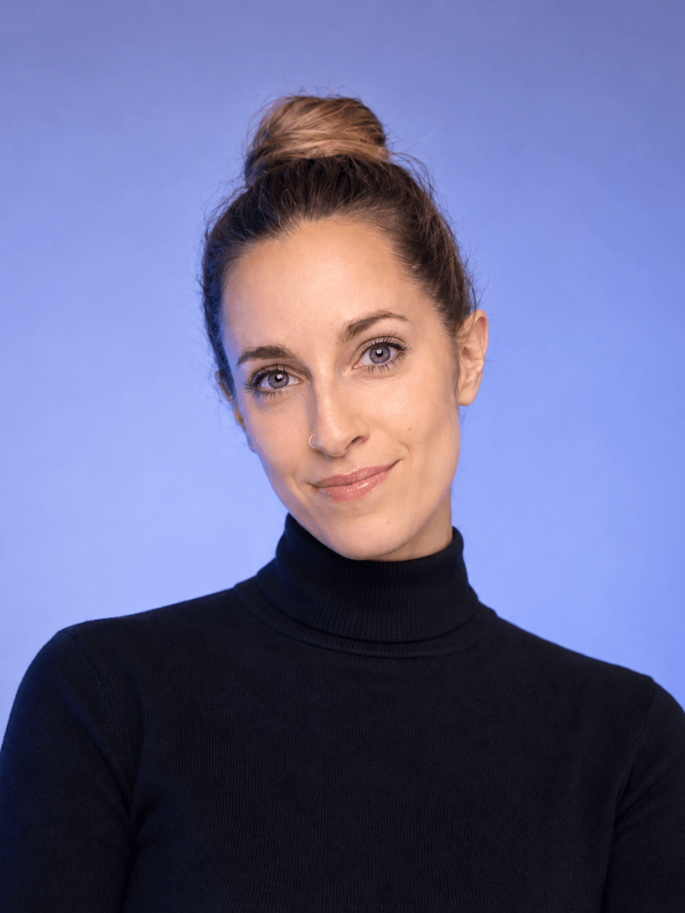

Szakmai Önéletrajz & Kiállítások

Bácsi Sztella képzőművész és formatervező. Munkásságának középpontjában az organikus matériák – agyag, vályog, nemesfák, természetes pigmentek – és a kortárs modern terek harmonikus szimbiózisa áll.
Alkotásaiban a figurális kifejezésmód ötvöződik a szobrászati funkcionalizmussal. Számos hazai és nemzetközi magángyűjteményben és reprezentatív enteriőrben jelennek meg plasztikái és festményei.
Tanulmányok & Végzettségek
Mesterdiploma, plasztikai formakutatás és kísérleti anyaghasználat.
Alkalmazott és autonóm képzőművészeti tanulmányok.
Válogatott Kiállítások
Egyéni kiállítás · Kortárs Design Galéria, Budapest
Csoportos tárlat · Kölcsey Központ, Debrecen
Kamarakiállítás · Művésztelepi Galéria, Szentendre
Nemzetközi Kortárs Művészeti Vásár, Bécs
További korábbi kiállítások ▾
- "The Art Place January-March" exhibition, Chelmsford, The Art Place // United Kingdom
- "The Art Place December" exhibition, Chelmsford, The Art Place // United Kingdom
- "1 hour, 10 hour, 100 hour // Eleven Tavasz" exhibition, Helium Drink Bar Budapest // Hungary
- "Sztella Bácsi" Exhibition, Nata design, Debrecen // Hungary
- "Sztella Bácsi" Exhibition, Soul art gift Studio, Debrecen // Hungary
- "The Art Cube Exhibition" Gongju, Geumang Nature Art Center // Republic of Korea
- "The Art Place January-December" exhibition, Chelmsford, The Art Place // United Kingdom
- "Zöldülő nyom // Elemven Tavasz", Moha café // Hungary
- "The Art Place January-December" exhibition, Chelmsford, The Art Place // United Kingdom
- "The Art Place December" exhibition, Chelmsford, The Art Place // United Kingdom
- "Nature Art Cube exhibition" Gongju, Geumang Nature Art Center // Republic of Korea
- "Foreign Friends" exhibiton Budapest, Lakásgaléria // Hungary
- "Institute of Visual Arts in Hungary", Gongju, Geumang Nature Art Center // Republic of Korea
- "2019 Foreign Friends" exhibition Kisapostag // Hungary
- "2018. Foreign Friends" exhibition Dunaújváros, Klub Hotel // Hungary
- "Part- Nature Art Exhibition" Oradea Castle, Museum, Oradea // Romania
- "Make Debrecen Skate again" exhibition B24 Gallery, Debrecen // Hungary
- "Part - Partium Art Projects" exhibition country house, Várasfenes, Finis // Romania
- "Infinite" exhibition, Dunaújváros Lutheran Church, Dunaújváros // Hungary
- "Global Nomadic Art Project - Rural Locations Eastern Europe 2017" exhibition, Korean Cultural Center, Budapest // Hungary
- "SKICC Art Association" exhibition, Kisapostag Village Culture House, Kisapostag // Hungary
- "Natural Art" exhibition, MODEM, Debrecen // Hungary
- "Night of Jewelry" exhibition, Fragola, Budapest // Hungary
- "My body" exhibition, FUGA, Budapest // Hungary
- "Diploma exhibition", György Kepes Cultural and Art Center, Eger // Hungary
- "Longboard" national training and applied arts exhibition, Tatabánya // Hungary
- "Nothing is nothing" exhibition, FUGA, Budapest // Hungary
- "Summary" exhibition, Géza Gárdonyi Memorial House, Exhibition Hall, Eger // Hungary
- "Nothing is nothing" exhibition, György Kepes Cultural and Art Center, Eger // Hungary
- "Green" exhibition, Studio of Young Artists Gallery, Budapest // Hungary
- "Square" exhibition, Gödör club, Eger // Hungary
- "The line and what is behind it" exhibition, Student Gallery, Eger // Hungary
- "XV. Jewellery enamel Symposium" exhibition, Déri Museum, Debrecen // Hungary
- "Only from a pure source" exhibition, Kölcsey Center „XIII. Goldsmith Symposium” exhibition, Déri Museum, Debrecen // Hungary
- "Graphics" exhibition, Gábor Sillye Cultural Center and Community House, Hajdúböszörmény // Hungary
Szimpóziumok & Művésztelepek
Hortobágyi Alkotótelep – Kísérleti vályog- és agyagformák építészeti térben.
Alpok-Adria Művészeti Fórum, Szlovénia – Rezonáló fa- és fényinstallációk.